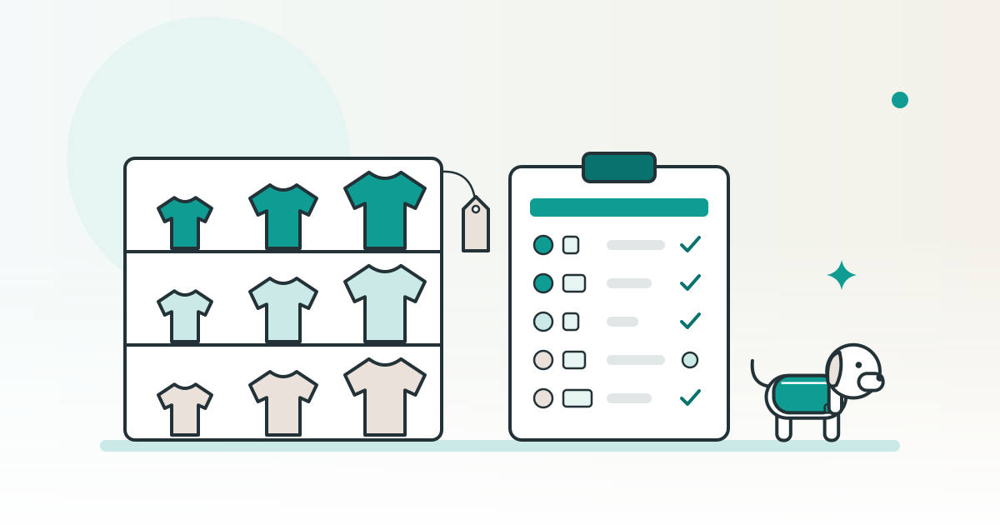

SHOPKIT コラム
色とサイズがある商品の在庫管理犬服の品番と注文をひも付ける

犬服の在庫管理では、色とサイズの組み合わせごとに品番を付け、その品番で注文と在庫表をつなぎます。同じ服でも「紺のS」と「紺のM」は分けて記録しましょう。手元にある枚数と、注文が入ってまだ出荷していない枚数を分け、次のお客様に販売できる分を見渡す方法を紹介します。
この記事は、完成品のネットショップを販売している SHOPKIT が書いています。
この記事で扱うのは、手元にある犬服を販売する場合の表と記録の作り方です。棚への置き方や入荷時の品質の点検は、それぞれの作業として分けて考えます。
- 色・サイズごとの品番を決め、同じ名前の服を区別する方法。
- 注文を受けたときと出荷したときに、どの欄を変えるか。
- 実物の数と記録がずれたときの調べ方。
色違い・サイズ違いは、組み合わせごとに別の品番にする
品番は、どの服の、どの色とサイズかを特定するための記号として決めます。商品名だけで注文をたどると、同じベストの色違いやサイズ違いを見分けるために、毎回ほかの欄も読み直すことになります。商品名を残した上で、組み合わせごとに重ならない品番を付けましょう。
たとえば、薄手のベストに紺と生成り、SとMを用意するなら、品番も色とサイズの組み合わせごとに分けます。下の表は記号の作り方の例です。実際の商品や、犬に合うサイズを示すものではありません。
| 商品名 | 色・サイズ | 品番の例 |
|---|---|---|
| 薄手ベスト | 紺・S | ベスト-紺-S |
| 薄手ベスト | 紺・M | ベスト-紺-M |
| 薄手ベスト | 生成り・S | ベスト-生成り-S |
| 薄手ベスト | 生成り・M | ベスト-生成り-M |
後から別のベストを扱うときも、以前の服と同じ品番を使い回さないようにします。品番を変える必要がある場合は、旧品番と新品番の対応を残し、変更前の注文もたどれるようにしてください。
関連：犬服のネットショップを始める｜価格帯・原価・仕入れの考え方
商品名・品番・色・サイズは、同じ表の別の欄に分ける
在庫表では、服を区別する情報と、枚数の状態を分けて書きます。品番だけを見て色やサイズを思い出す作りにせず、文字でも照らせる欄を用意しましょう。仕入れ先の品番と店内の品番が異なるなら、対応する記号も別の欄へ残します。
| 欄 | 入れる内容 | 分ける目的 |
|---|---|---|
| 商品を区別する欄 | 商品名、店内の品番、色、サイズ、仕入れ先の品番。 | 注文や仕入れの記録を、同じ服の組み合わせに結び付ける。 |
| 手元の枚数 | その品番で、現物を数えた枚数。 | 売れる分と注文済みの分を含め、実物と照らす。 |
| 注文済み・未出荷 | 受け付けた注文に割り当て、まだ出荷していない枚数。 | 次の注文へ重ねて割り当てないようにする。 |
| 販売から外す分 | 点検中など、今は注文を受けない枚数と理由。 | 手元にあっても売らない服を区別する。 |
| 販売できる枚数 | 手元の枚数から、未出荷の注文分と販売から外す分を引いた枚数。 | 販売ページで受け付ける分を判断する。 |
| 更新の記録 | 更新日時、変えた内容、注文番号や入荷の記録の参照先。 | 数が変わった理由を後からたどる。 |
この欄分けを使う場合、同じ服を「注文済み」と「販売から外す分」の両方に重ねて数えない決め方にします。入荷予定の服は、まだ手元にない分として別に記録し、現物の枚数へ足さないでください。
表の欄は記録方法の例です。使っているお店の仕組みで枚数が更新される場合は、どの時点でどの欄が変わるかを先に確かめ、同じ注文分を手入力でも引かないようにしましょう。
入荷・注文・出荷は、同じ品番で記録する
枚数が変わるたびに、品番・日付・増減の理由と参照する記録を残します。注文の控えにも、商品名、色、サイズとともに品番を持たせましょう。注文に割り当てる時点は店の受付の決まりに合わせ、一度決めた扱いを記録する人によって変えないことが大切です。
| 起きたこと | 表で変える所 | 残す記録 |
|---|---|---|
| 入荷分を受け入れた | 数と状態を確認した分を、手元の枚数へ加える。販売から外す分があれば分ける。 | 入荷を照合した日、品番、枚数、参照する入荷の記録。 |
| 注文へ服を割り当てた | 注文済み・未出荷の欄へ移す。手元の枚数は変えない。 | 注文番号、品番、割り当てた枚数、受付の状態。 |
| 注文の服を出荷した | 手元の枚数と、注文済み・未出荷の枚数を、それぞれ出荷分だけ減らす。 | 出荷日、注文番号、品番、出荷した枚数。 |
| 割り当て済みの注文を出荷前に取り消した | 注文済み・未出荷から外す。手元の枚数は変えず、販売へ戻せる状態かを見る。 | 取り消しを確かめた日、注文番号、品番、戻す扱い。 |
この方式では、出荷時に手元の分と未出荷の分が同じだけ減るため、販売できる枚数は出荷だけでは変わりません。注文の割り当て時にすでに販売分から外しているので、出荷時に販売できる枚数をさらに引かないようにします。
お客様から戻ってきた服は、戻った事実と状態を確かめた上で記録します。販売できるか判断が済むまでは、販売から外す分として区別しましょう。
数が合わないときは、記録を日付の順にたどる
ずれを見つけたら、品番ごとに実物を数え直し、最後に数が一致した記録へ戻ります。不足分をほかの色やサイズの在庫で埋めたことにせず、その組み合わせの入荷と注文を追いましょう。数が分からないままの品番は、新しく受け付ける扱いも見直します。
- 色・サイズ・品番の対応を読む。別の品番に記入した入荷や注文がないかを見ます。
- 一致していた日以降の記録を並べる。入荷、注文への割り当て、出荷、取り消し、返送の順を実際の日付で照らします。
- 注文番号と増減を照合する。同じ注文の二重記録や、出荷済みなのに未出荷欄へ残った分を探します。
- 訂正前の数と理由を残す。調べて分かった原因、訂正した日、直した欄が分かる記録を添えます。
原因が分からないときも、記録を消して実物の数へ合わせるだけで終えないようにします。数えた日時、実物の数、調べた注文、まだ分からない差を分けて残すと、後から入荷や出荷の控えが見つかったときに照らし直せます。
関連：ネットショップを一人で運営するには｜毎日の作業と、続けるための決めごと
在庫表を見直す日を決めて、売り切れの表示とそろえる
日を決めた現物の照合に加え、注文や出荷で数が変わったときにも販売表示を見ます。見直す日まで更新を待つと、その間の注文分が販売できる枚数に残ってしまいます。最後にいつ、どの記録まで反映したかを表に書いておきましょう。
販売ページでは、商品全体が販売中でも、選んだ色とサイズは売り切れている場合があります。品番ごとに受け付ける枚数と、その組み合わせを選んだときの表示を照らします。別の色が残っているからといって、売り切れた組み合わせも選べる状態にしないよう点検してください。
消費者庁の特定商取引法ガイド「通信販売」では、販売数を制限するなど、特別な販売条件がある場合に、その内容を広告に示す事項として挙げています。在庫表を作る作業と、お客様に販売条件を伝える作業をつなげて考えましょう。
商品ごとの表示を点検するときは、販売数の条件と、お渡しする時期の案内も照らします。入荷日が決まっていない分を、手元の服と同じ予定で送れるように書かないことも点検に含めてください。
お店を買って始めるときは、商品一覧と品番の対応を聞く
購入前に、受け取れる商品資料と、販売後に自分で更新する記録の範囲を確かめましょう。SHOPKITの2026年10月15日時点のサービスページは、商品と店舗を整えて販売を始める準備をした状態でお渡しすると案内しています。お渡しする内容には、お店一式と仕入れの情報、運営・集客のマニュアルが含まれます。出典：お渡しするもの。
品番の付け方や在庫表の形式は、お店を選ぶ前の質問にしておきましょう。商品名・色・サイズを仕入れ先の記号とどう結び付けるか、注文後に誰がどの記録を更新するかを、説明してもらってから検討します。
手元に在庫を置く場合は、実物を数えた記録と、受け取る商品資料を照らす準備も必要です。商品一覧があることと、日々の在庫数が更新されていることは分けて確かめてください。
関連：ネットショップ開業に必要なもの・手続きは？始める前に用意する物の一覧
よくある質問
犬服の品番は、同じ商品なら色やサイズが違っても共通にできますか？
この記事の記録方法では、色とサイズの組み合わせごとに別の品番を付けます。同じ商品名でも、注文した服と在庫表の行を照らせるようにするためです。
注文を受けた犬服は、手元の枚数からすぐに引きますか？
本文の方式では、注文へ割り当てた時点で未出荷の欄へ記録し、手元の枚数は出荷時に減らします。販売できる枚数は未出荷分を引いて求め、出荷時に二度引かないようにします。
在庫表の数と実物が合わないときは、何から調べますか？
品番ごとに数え直し、最後に一致していた日以降の入荷・注文・出荷の記録をたどります。訂正するときは、元の数と調べた内容、訂正理由も残しましょう。
販売ページの在庫は、見直す日だけ更新すればよいですか？
本文では、日を決めた照合に加えて、注文や出荷で数が変わったときにも表示を点検する方法を紹介しています。商品全体の表示と、選んだ色・サイズの表示を照らしてください。
※ SHOPKITのお渡しするものについては、2026年10月15日時点のサービスページの記載です。公的資料は2026年10月26日に確認しました。